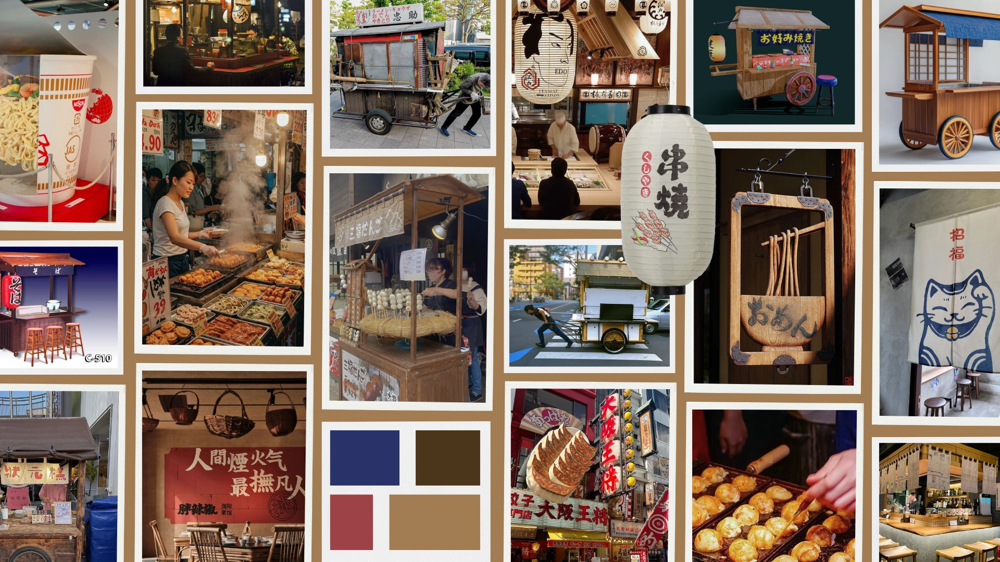
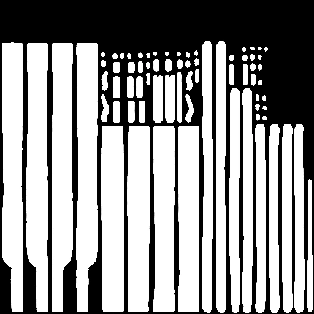
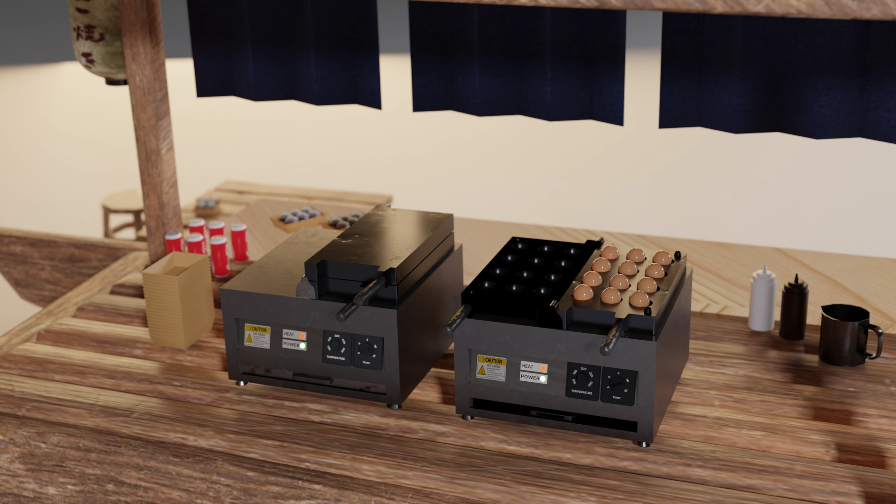

Project overview
For our final assignment in this class, we had to create a 3D food cart. I chose a Japanese inspired takoyaki cart because I found the style interesting and wanted to try something less colourful than the work I usually make.
Throughout the year, we practised modelling different assets, texturing and lighting in Blender. This final project brought those skills together in a complete scene, from the cart and cooking equipment to the smaller props and seating area.
- Project type
- 3D scene design
- Tool
- Blender
- Focus
- Modelling, texturing and lighting
- Output
- Full and hero views
The cart
Wooden panels, a pitched roof, wheels and long handles establish the main structure.
The counter
Takoyaki machines, food trays, sauce bottles and drinks fill the serving area.
The setting
Lanterns, curtains, a freestanding sign and seating complete the scene.
Moodboard & direction
The original moodboard brings together Japanese street carts, food stalls, lanterns, fabric signs and warm wood surfaces. These references connect the cart’s structure with its smaller decorative details.


In the final render, the warm timber contrasts with dark blue curtains, while the lanterns and small red drink cans add lighter and brighter accents.
- Indigo
#2A3469 - Dark brown
#4B361B - Muted red
#9C4347 - Warm tan
#A27B52
Structure & props
The model combines the cart’s larger structural forms with smaller food and service props. Drag the cart to rotate the scene and explore it from different angles. Scroll or pinch to zoom in on the smaller details.
The interactive view could not load. Explore the full render instead ↗
Structural forms
The roof, support posts, panels and wheels give the cart a clear overall silhouette.
Repeated details
Roof segments, wheel spokes, takoyaki pieces and serving trays add detail through repetition.
Scene arrangement
The counter equipment, freestanding sign and seating are arranged around the cart.
Materials & surfaces
Wood grain, fabric, paper and metal give the objects distinct surfaces. The project contains PBR texture sets and baked materials for the cart and its props.
Cart & seating
Visible grain runs across the cart body, supporting posts, table and stools.
Curtains & lanterns
Dark fabric panels sit below the roof, with light paper lanterns on either side.
Cooking equipment
Reflective machine bodies, dark cooking plates, knobs and indicator lights detail the counter.
Cart body texture maps
Separate maps describe the colour, surface roughness, normal detail and metalness of the cart body.



Lighting & final renders
The project is presented through two views. The full view shows the complete cart and seating area. The hero view takes a closer look at the objects, including the cooking equipment, food and countertop props.

